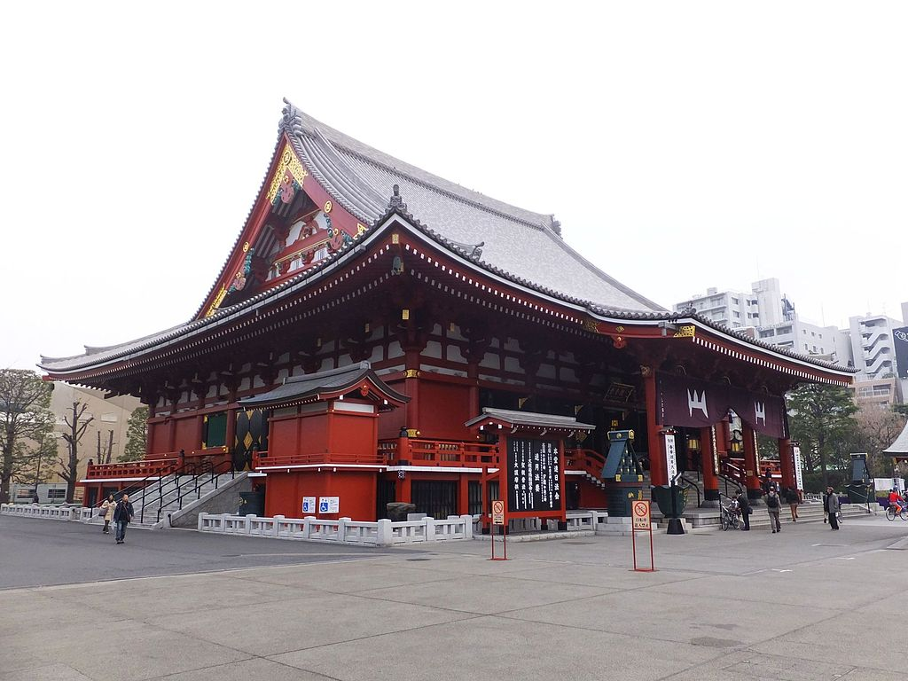

Bezienswaardigheden

Thuisbasis oudste monarchie
In 1989 ontving Akihito de inhuldiging als keizer van Japan, om door te gaan met een oudere monarchistische wiens geschiedenis zich uit strekt van 660 na Chr. Op deze manier heeft het keizerlijk huis van Japan door de geschiedenis heen met 125 vorsten geparadeerd, waarvan de overgrote meerderheid mannen waren.
Sensō-ji is en oude boeddhistische tempel die zich bevindt in Asakusa, Tokyo, Japan. Het is Tokyo's oudste tempel, en één van de meest belangrijkste. Vroeger geassocieerd met de Tendai-sekte of boeddhisme, het werd onafhankelijk na de Tweede Wereldoorlog. Naast de tempel staat er een shintoshrijn, de Asakusa Shrine.
Odaiba (お台場) is een populaire winkelstraat en entertainment district op een mens gemaakt eiland in de baai van Tokyo. Het is ontstaan als een verzameling van kleine mens gemaakte fort eilanden (daiba betekend letterlijk "fort"), die gebouwd werden tegen het einde van de Edo Periode (1603-1868) ter bescherming van Tokyo tegen mogelijke aanvallen van de zee en specifiek als reactie op de kanonneerboot politiek van Commodore Perry.
Ueno Park (上野公園, Ueno Kōen) is een groot openbaar park naast het Station van Ueno Station in centraal Tokyo. De gronden van het park waren oorspronkelijk deel van de Kaneiji Temple, die vroeger één van de grootste en rijkste tempels van de stad en een familie tempel van de overheersende Tokugawa clan tijdens de Edo periode. Kaneiji stond in het noordoosten van de hoofdstad om de stad te beschermen tegen kwaad, erg gelijkend aan de Enryakuji Temple in Kyoto.

Het Pokémon Center bevind zich niet alleen in Tokio maar ook in Sapporo, Sendai, Yokohama, Nagoya, Osaka, Hiroshime and Fukooka. Je kan er alles van Pokémon kopen zoals ruilkaarten, speelgoed, spelletjes, exclusieve items en uitzetstanden.